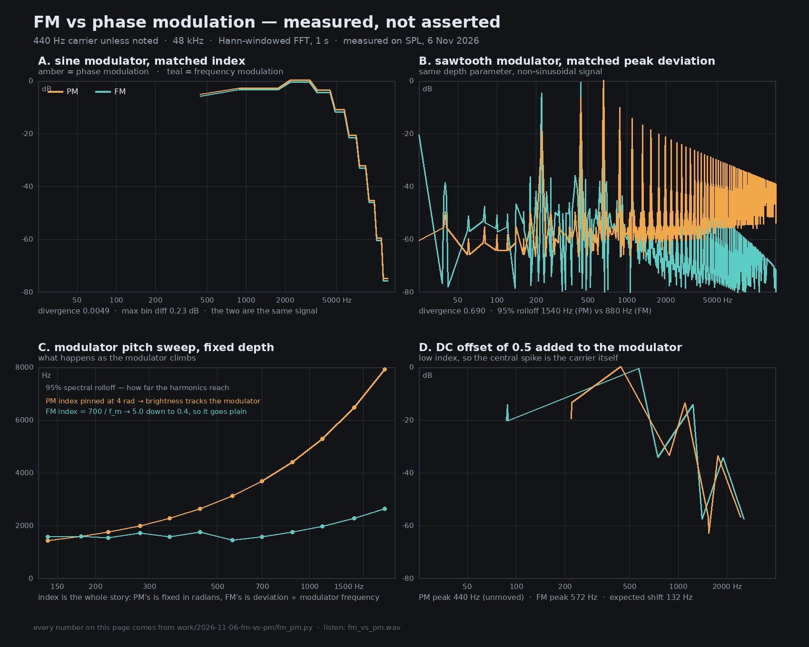

Almost everything sold as “FM” — the DX7, Dexed, FM8, Sytrus — is modulating phase, not frequency. That correction is true, and it explains almost none of the sound. Here is what it actually changes.
One adds to the phase. The other adds to the frequency — which is the phase's rate of change, so the modulator gets integrated before it touches anything. Everything below falls out of that one line of algebra.
Start a tone, then switch PM ↔ FM. With a sine modulator and a non-degenerate pitch ratio the depth is converted so the two are the same signal — nothing should change. Then alter the modulator’s shape, or its pitch, or add an offset, or use a plain 1 : 1 ratio, and watch which one breaks.
A short window of the carrier — long enough to see which quantity the modulator is actually pushing around.
Same axes as the printed figure: log frequency, 30 Hz to 12 kHz.
Because the index is dialled differently. In PM the index is a fixed number of radians, set by the modulator’s amplitude; in FM it is deviation ÷ modulator frequency, so it moves when the modulator’s pitch does. Sweeping a modulator from 140 Hz to 1760 Hz at fixed depth, PM’s harmonics reach from 1440 Hz out to 7920 Hz, while FM holds at 1442–2638 Hz with its index collapsing from 5.0 to 0.4.
That is why an “FM” patch loses harmonics when you raise the modulator, why it is rock-solid in tuning, and why a square-wave modulator does almost nothing to it while doing something violent to a true FM oscillator.

Yamaha knew. Chowning’s 1973 paper says frequency modulation; Yamaha’s implementation
patent (Oya, US4643066) is a phase accumulator, and Massive X still labels its FM knobs
PM today. The word stuck because “FM” already meant better radio to a 1983
buyer.